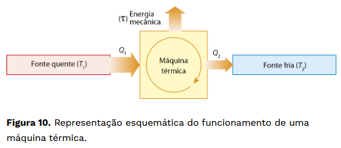

Maquina Térmica
Em uma máquina térmica, ocorre a conversão da energia térmica (calor) em energia mecânica (trabalho). Em alguns casos, a energia térmica provém da queima de algum tipo de combustível, como ocorre nos veículos automotores (gasolina, diesel ou álcool) ou nas caldeiras (madeira ou carvão). O princípio de funcionamento das máquinas térmicas foi estabelecido por Nicolas Léonard Sadi Carnot (1796-1832).
Estudando essas máquinas, ele comprovou a necessidade de elas trabalharem entre duas fontes de calor mantidas em temperaturas diferentes. Essas fontes de calor são denominadas fonte quente (temperatura maior) e fonte fria (temperatura menor). Em um motor de automóvel, a fonte quente é a câmara do pistão, onde ocorre a queima do combustível.
A fonte fria é o meio ambiente, onde são descarregados os resíduos da combustão, inclusive parte do calor não aproveitado. Portanto, uma máquina térmica retira uma quantidade Q1 de calor da fonte quente, realiza certa quantidade de trabalho e rejeita uma quantidade Q2 de calor para a fonte fria

Fórmula:
τ = ∣ Q1 ∣ - ∣ Q2 ∣
Onde:
Q1: Quantidade da fonte de Calor Quente
Q2: Quantidade da fonte de Calor Fria